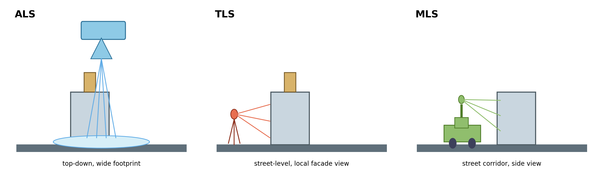
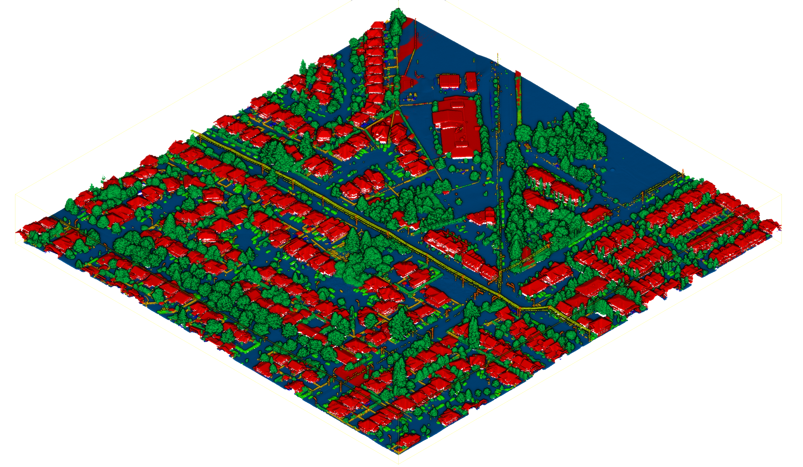

Ein 3D-Scanner tastet seine Umgebung ab. Millionen Messpunkte ergeben gemeinsam ein digitales 3D-Abbild.
Vom 3D-Scan zur belastbaren Daten- und KI-Pipeline

 NumPy
NumPy Python 3.10
Python 3.10 SciPy
SciPy NumbaFAISS
NumbaFAISS PyTorch 2.5
PyTorch 2.5 CUDA 12.4PointceptPTv3NumPyMatplotlib
CUDA 12.4PointceptPTv3NumPyMatplotlib Jupyter
Jupyter Git
Git Bash
Bash pytest
pytest Flask
Flask JavaScript
JavaScript HTML
HTML CSSREST
CSSREST LaTeX
LaTeX AsciiDoc
AsciiDoc Reveal.js
Reveal.js